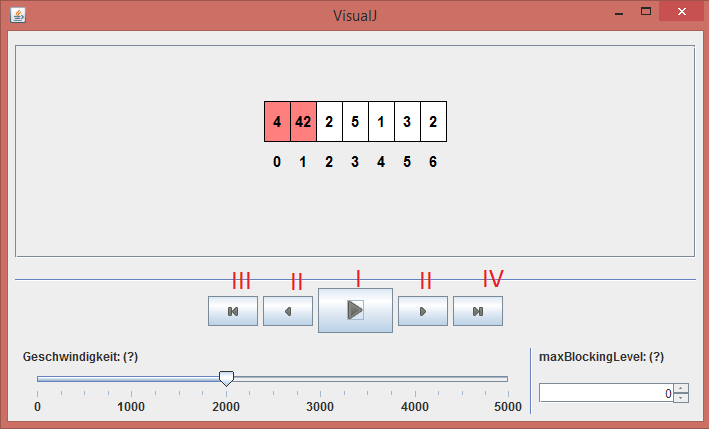

Alice hat von ihrem Lehrer Herr Bob die Aufgabe bekommen, Insertion sort zu implementieren und ihren Klassenkameraden die Funktionsweise zu erklären.
Den Algorithmus selbst hat sie schnell implementiert:
public static void insertionSort(int[] arr) {
for (int i = 1; i < arr.length; ++i) {
for (int j = i; j > 0 && arr[j - 1] > arr[j]; --j) {
swap(arr, j - 1, j);
}
}
}
private static void swap(int[] arr, int i, int j) {
int temp = arr[i];
arr[i] = arr[j];
arr[j] = temp;
}Um nun zu erklären, wie der Algorithmus funktioniert, will sie ihn visualisieren:
public static void insertionSort(int[] arr) {
*1 Breakpoints.reset();
*2 Window win = new Window();
*3 IntArrayLogger log = new IntArrayLogger(arr);
*4 win.addVisualizer(log);
*5 win.setVisible(true);
Breakpoints.breakpoint();
for (int i = 1; i < arr.length; ++i) {
for (int j = i; j > 0 && arr[j - 1] > arr[j]; --j) {
swap(arr, j - 1, j);
*6 log.update(arr);
*7 Breakpoints.breakpoint();
}
}
}Was passiert hier genau?
Alice stellt sicher, dass alle Daten von voherigen Ausführungen gelöscht sind. (*1)
Sie erstellt ein neues Fenster, in dem später die Visualisierung angezeigt wird (*2), sowie einen IntArrayLogger, dem sie ihr Array übergibt (*3), und fügt diesen in das Fenster ein (*4). Anschließend macht sie das Fenster sichtbar (*5).
Nach jedem Schritt des Algorithmus übergibt sie per update() dem Logger den neuesten Wert (*6) und sorgt mit Breakpoints.breakpoint() dafür, dass das Programm anhält (*7), bis sie im Fenster auf eine Taste drückt.

Alice kann nun mit dem Play-Button (I) das Programm von alleine – mit der unten im Fenster festgelegten Geschwindigkeit – durchlaufen lassen. Sie kann aber auch das Programm Schritt für Schritt durchgehen und dabei beliebig vor und zurück springen (II). Mit dem Button III kann sie zum ersten Breakpoint springen; mit IV gelangt sie zum letzten Breakpoint.